The Taste of Authentic Spain
A curated menu of fresh seafood, premium aged meats, and traditional Andalusian recipes at Lumen Eats.
Soups & Main Course: Paella Mixta, Chuletón de Ávila, Gazpacho Andaluz, Cangrejo al Ajillo
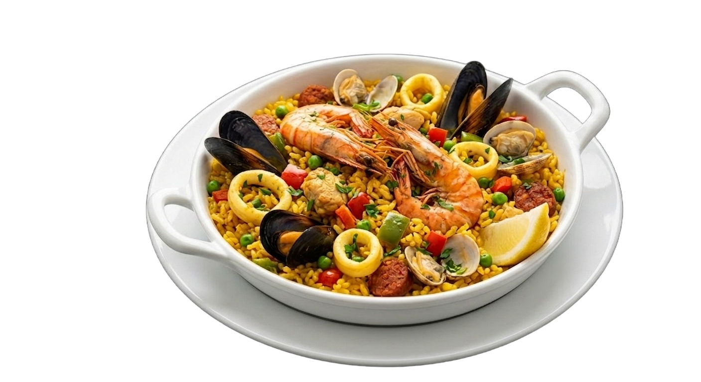
Seafood & Chorizo Paella Mixta
Traditional Spanish saffron rice dish with large tiger prawns, mussels in shells, vongole clams, squid rings, and spicy chorizo sausage. Cooked with bell peppers, tomatoes, and green peas. Served with fresh herbs and a lemon wedge.
$18.00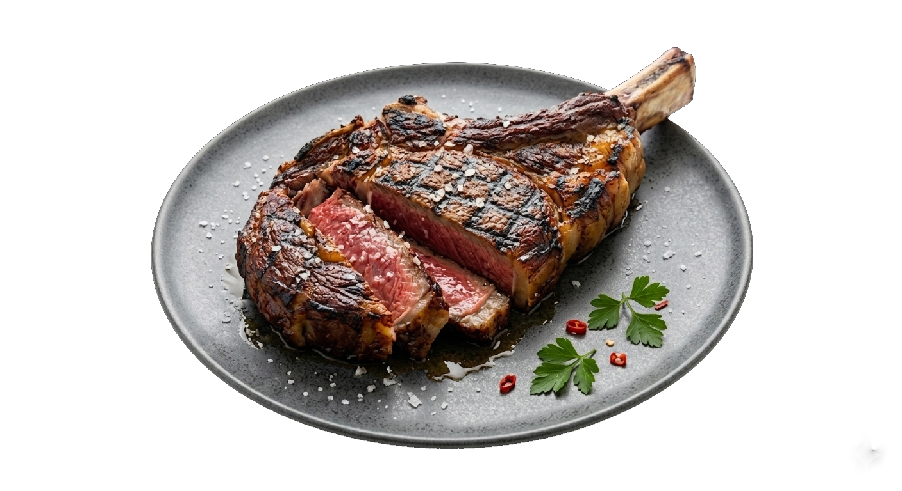
Authentic Spanish Chuletón Steak
Premium bone-in ribeye steak from aged beef, grilled over an open flame. Served sliced with a perfect medium-rare sear, dusted with coarse sea salt. Garnished with fresh parsley and chili flakes.
$28.00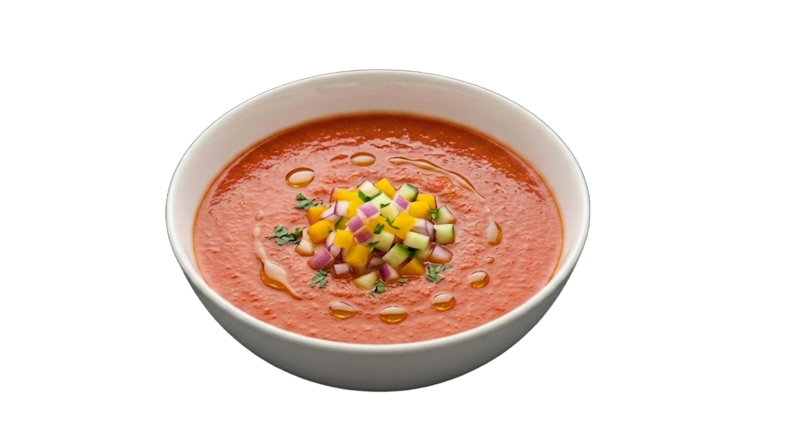
Traditional Andalusian Gazpacho
Cold Spanish soup made from ripe tomatoes, fresh cucumbers, bell peppers, and garlic, blended with olive oil and wine vinegar. Served chilled, topped with finely diced fresh vegetable tartar and drops of Extra Virgin olive oil.
$8.50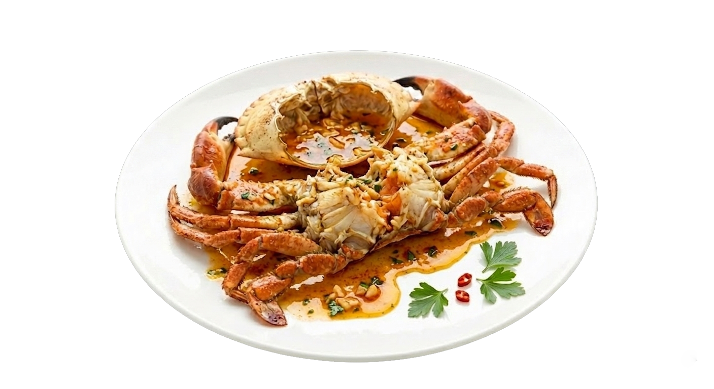
Garlic Chili Crab
Fresh whole sea crab, grilled and broken into portions. Served on a large platter drenched in a rich, flavorful sauce made of olive oil, minced garlic, white wine, and a hint of chili. Garnished with fresh parsley.
$34.00Tapas / Starters: Tortilla de Patatas, Patatas Bravas, Jamón Ibérico
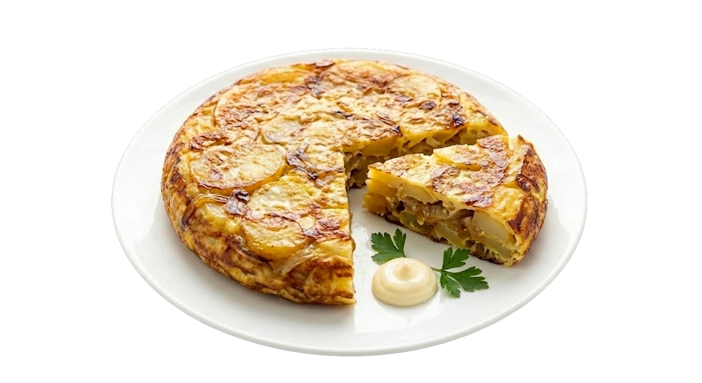
Traditional Spanish Tortilla
Classic Spanish omelet made with thinly sliced potatoes and onions, slowly poached in olive oil, then baked with whipped eggs. Served warm with a side of aioli sauce and fresh herbs.
$10.00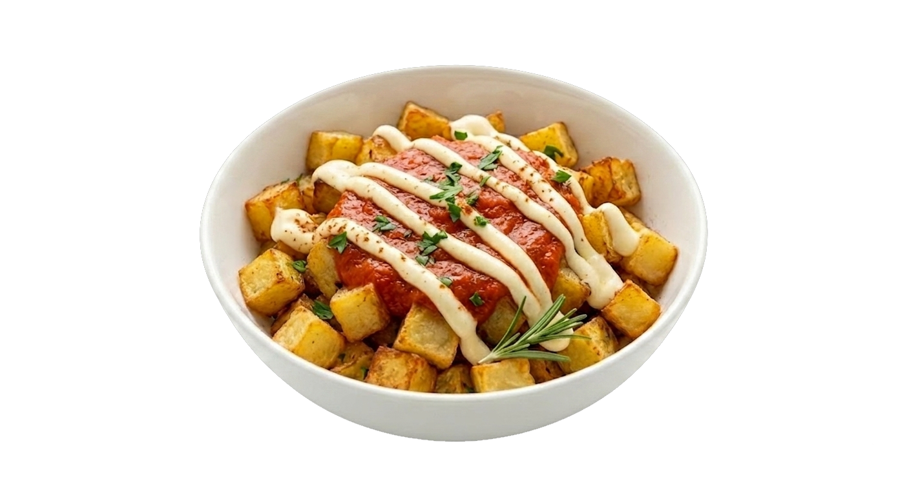
Patatas Bravas
Popular Spanish tapas consisting of large potato cubes, deep-fried until crispy. Served warm topped with a spicy tomato "Brava" sauce and traditional garlic Aioli. Garnished with fresh herbs.
$7.00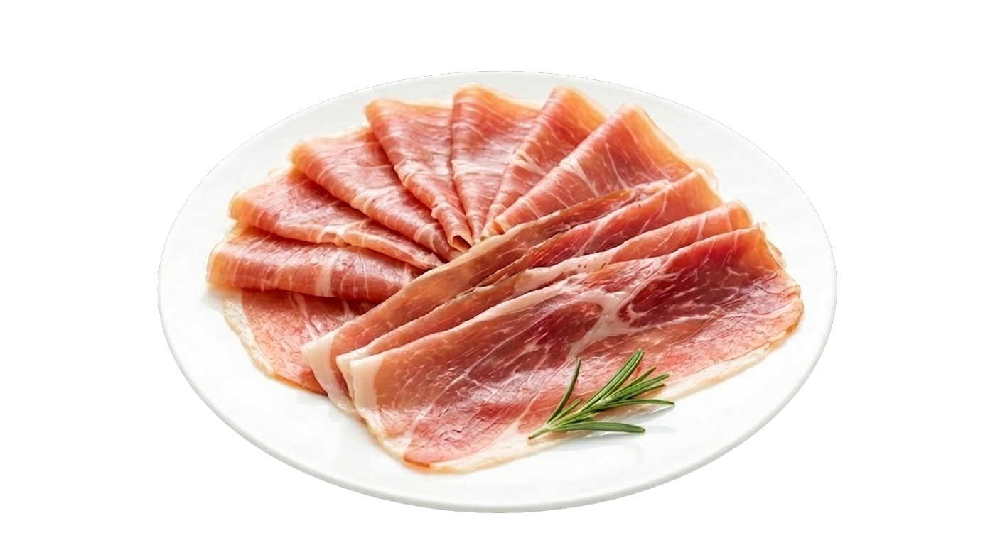
Jamón Ibérico Platter
Premium Spanish delicacy — thinly sliced dry-cured Iberian ham. Features a tender, melt-in-the-mouth texture with a rich, savory, and slightly nutty flavor profile. Served on a plate with a sprig of fresh rosemary.
$15.00Desserts: Churros con Chocolate, Tarta de Santiago
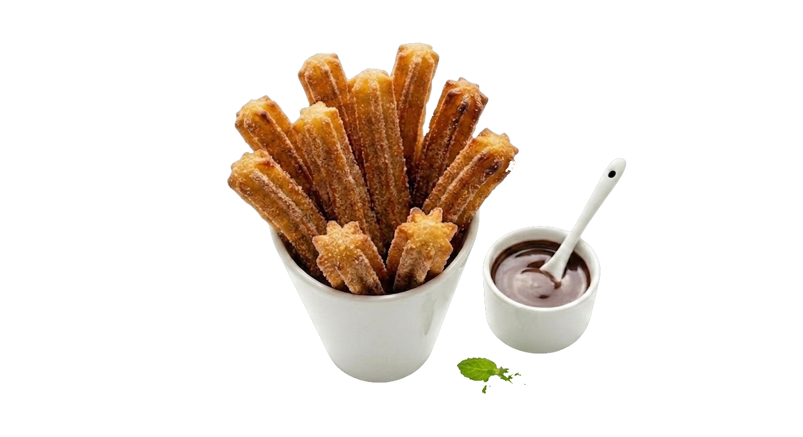
Traditional Spanish Churros with Chocolate
Hot choux pastry dough sticks, fried until crispy and golden, dusted with sugar and cinnamon. Served in a cup with a side of thick, warm hot chocolate sauce for dipping.
$8.00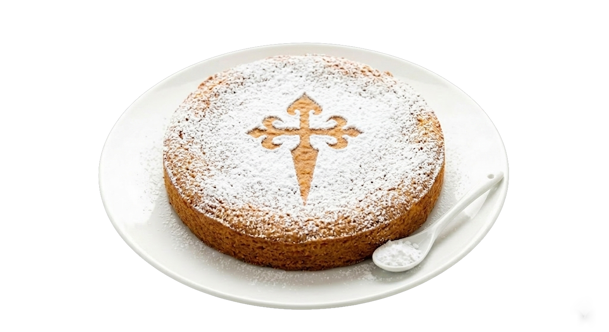
Traditional Almond Cake Tarta de Santiago
Classic Galician dessert made from ground almonds, eggs, and sugar, infused with a hint of lemon zest and cinnamon. The cake has a rich, moist texture and is naturally flourless. Dusted with powdered sugar featuring the signature Cross of Saint James.
$16.50Drinks & Wine: Sangría Tradicional, Vino de Jerez
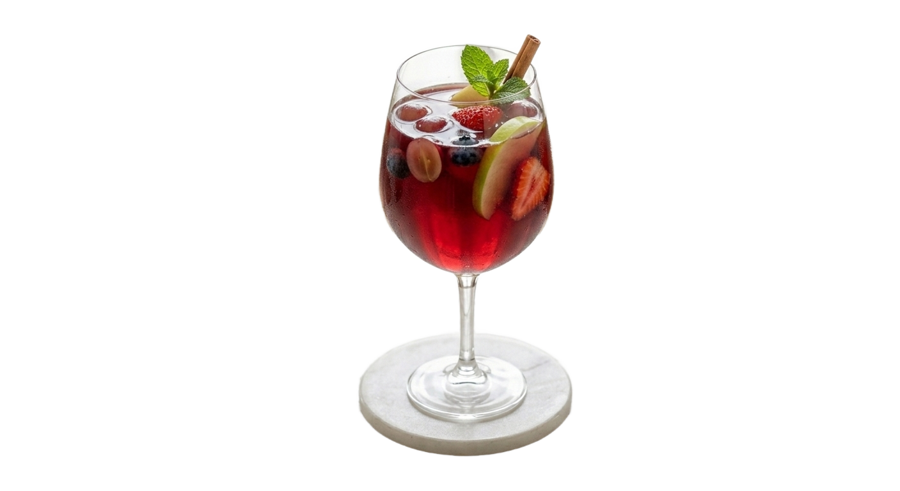
Traditional Spanish Sangria
Traditional refreshing Spanish drink made with dry red wine, infused with a touch of brandy, liqueur, and fresh orange juice. Served chilled with ice, a cinnamon stick, fresh mint, and a mix of seasonal fruits and berries, including apple slices, strawberries, and grapes.
$8.00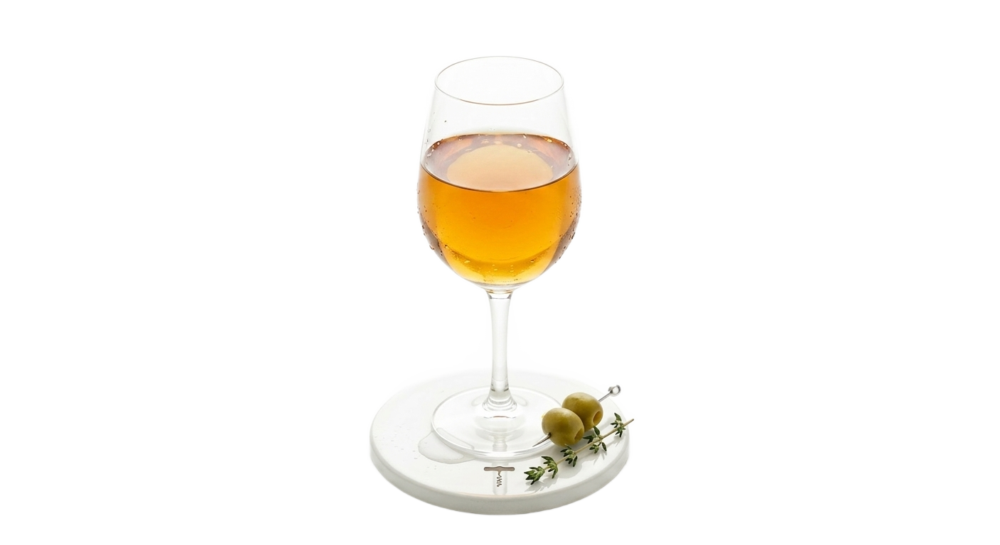
Traditional Sherry (Vino de Jerez)
Classic fortified Spanish wine originating from Andalusia. Features a deep amber color, a well-balanced dry taste, and a rich aroma with notes of nuts and oak. Served chilled in a wine glass, accompanied by skewered olives and a sprig of thyme.
$8.50